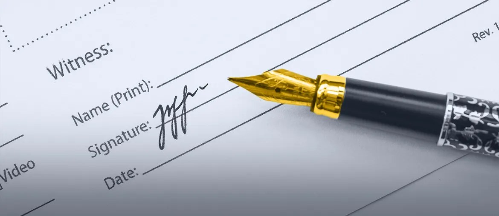

Proposal brief from Elinext
We saw Libra hiring a Business Development Executive for Boston. That role will sell, train, and support more law firms on MoveDocs and Oasis funding.
The Boston hire says Libra is pushing MoveDocs into more law firms. That means more attorney training, CMS setup, and Oasis funding requests. The hard part is keeping data clean across sales, product, and operations. If that data stays split, reps lose follow-up time and Eric's team carries more manual reporting.
Use a dedicated squad under Libra's product or analytics owner. The first pilot runs six weeks, with weekly demos and one clear launch report.
Define events for firm onboarding, portal training, CMS connection, Oasis requests, and first active case.
Add test coverage for records, bills, payoff letters, and appointment updates across main CMS paths.
Build shared pipeline views for sales, product, and analytics, using one data definition set.
Show where firms stall, where support repeats, and what the next squad should improve.
Relevant stack: React, Angular, Node.js, .NET/C#, Python, QA automation.
Elinext is a full-cycle software team, active since 1997. We have about 700 in-house specialists and use no freelancers. For Libra, the fit is a dedicated web, data, and QA squad for regulated workflows. We hold ISO 9001 and ISO 27001, which matters for sensitive legal and medical data. We can work under your product owner or own a scoped workstream. Our clients include Broadcom, Siemens, Volkswagen, TRUMPF, and TUI. That experience maps well to the pilot above. This keeps the pilot practical.
